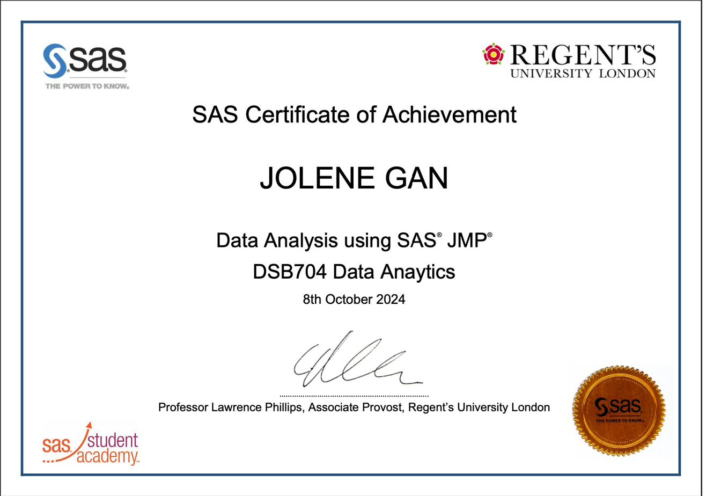
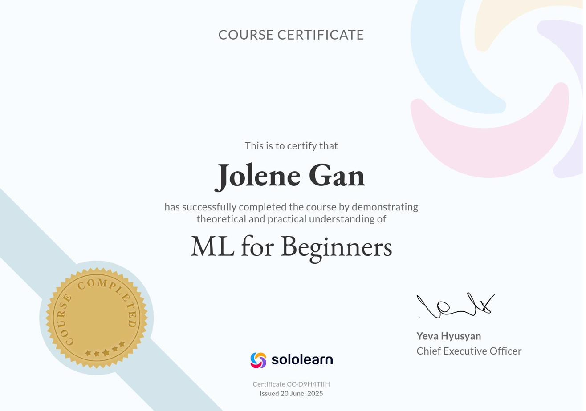
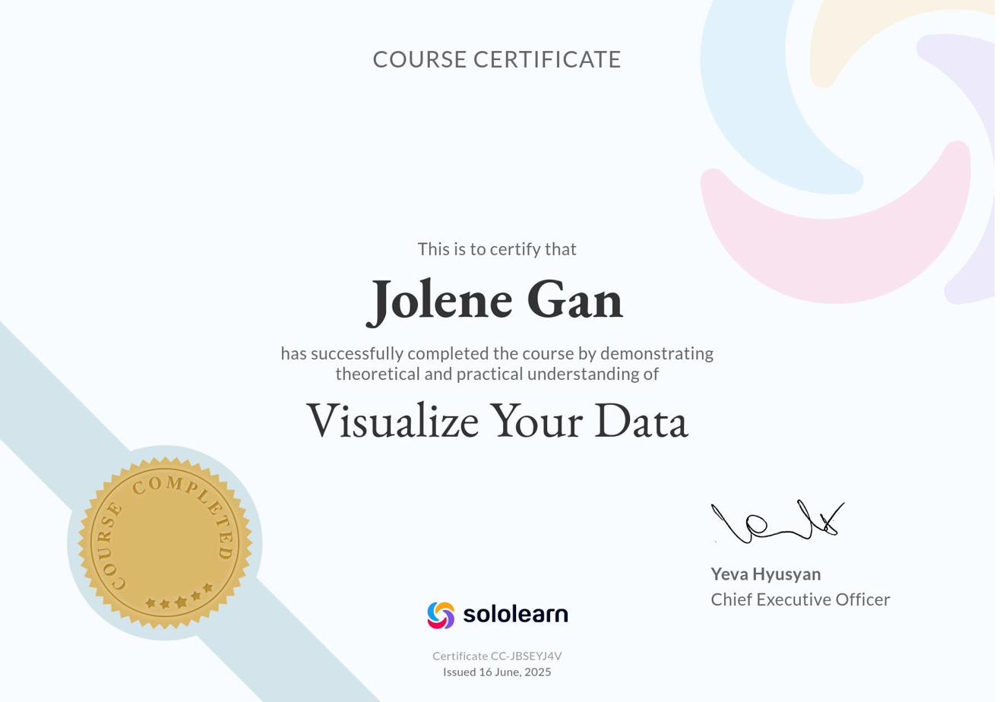
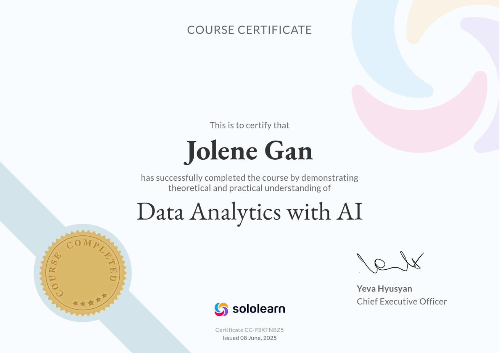
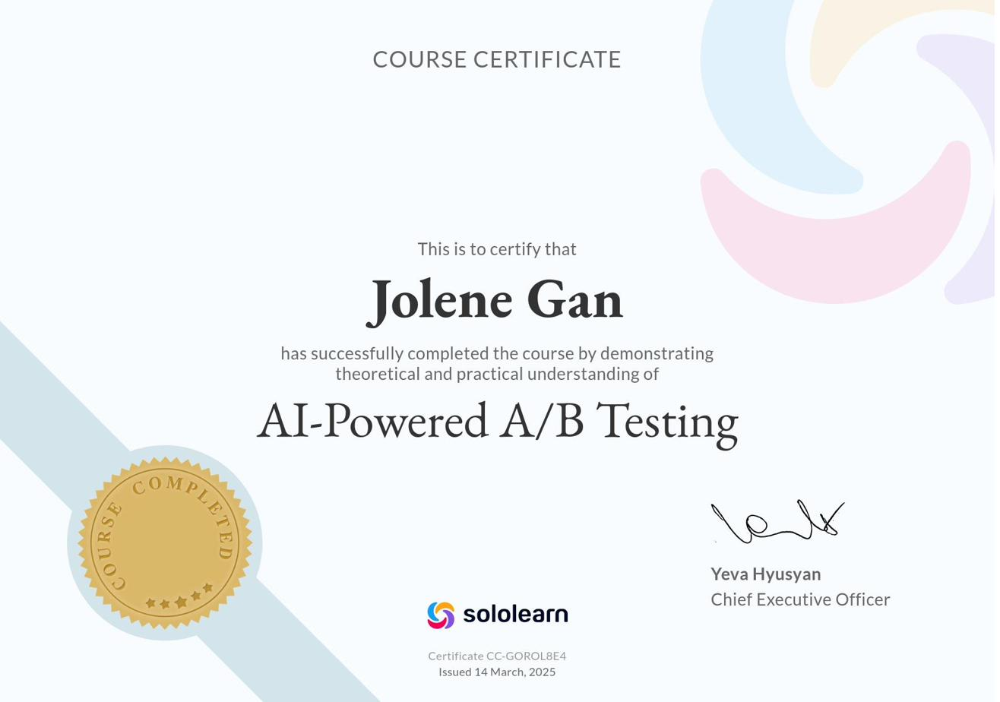
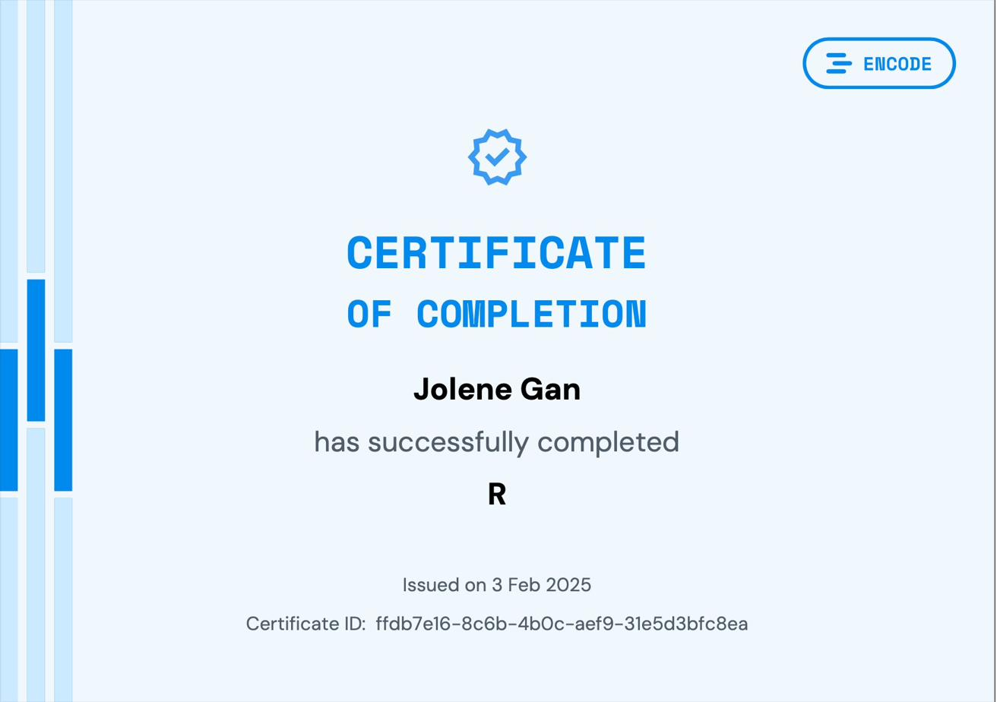
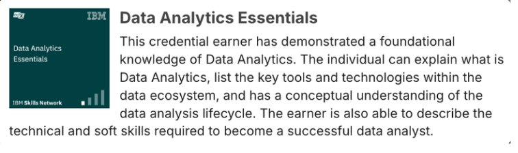

03 / Learning & Development
The learning
map.
An honest, ongoing record of every course, event, and credential - plotted by domain and difficulty.
Course Map
Each course is plotted by estimated difficulty (x-axis) and duration (y-axis), grouped by domain. Click any numbered point or list item to jump to the course detail below.
Professional Credentials
Certificates and badges issued by recognised organisations, not micro-course completions.
Certificate of Achievement: Data Analysis using SAS JMP
SAS Academy, issued via Regent's University London, October 2024
Proficiency in SAS software for statistical analysis. Covers comparing means, analysis of variance, categorical analysis, correlation and regression, multiple linear regression, and logistic regression.

Data Science by KNIME
Accredited by KNIME, facilitated on LinkedIn Learning
Six-course path: Data Science Fundamentals, Low Code/No-Code Data Literacy with KNIME, Introduction to AI, Machine Learning and AI Foundations (Classification Modelling), Generative AI and Large Language Models, and Non-Technical Skills of Effective Data Scientists.
view certificateAdobe InDesign for Data Presentation
Accredited by Adobe, facilitated on LinkedIn Learning
Creating, adjusting and formatting data tables in InDesign. Data presentation for print and digital publishing. Document, page and spread management for analytics dashboards. Working with text frames, graphics, and customising the InDesign workspace.
view certificateReporting and Analytics
HandShake Academy
Completed during internship involvement with HandShake. Covers leveraging analytics for dashboard creation, scheduling reports for automated data delivery, and report customisation.
view certificate
Course Certificates
Completion certificates from app-based and online micro-courses (Sololearn, Mimo, and similar platforms).

- Rules-based AI (logical rules), machine learning (data patterns)
- Discriminative AI, generative AI, deep learning and neural networks
- Supervised learning (labelled data), unsupervised learning (unlabelled data)
- Regression, classification, and clustering for prediction and grouping
- NLP, image recognition, and making complex predictions with large training datasets

- Generating charts (histograms, bar charts, lines/dots) with AI assistance
- Visual encoders: position, size, shapes, and colour
- Data storytelling: connecting context, visuals, narrative, and the problem statement
- Audience and tone considerations (executive vs social media)
- Using AI for faster data story crafting

- Using AI to uncover insights (conversion rates, written feedback analysis)
- Big data summary metrics and statistics
- Relative percentage difference (delta) between means for statistical confidence
- Calculating significance (p-value), accepting and rejecting hypotheses
- Calculating spread (variation) and range; handling GenAI risks including hallucinations
- Sets, lists, tuples for mutable and immutable collections, duplicates, and indexing
- Dictionaries: key-value pairs for data storage
- Higher-order functions, lambda expressions for compact anonymous functions
- Object-oriented programming: abstraction, inheritance, polymorphism, encapsulation
- Data hiding (protected and private attributes), name mangling for class safety

- len(), append(), insert(), pop() for sequence and list operations
- def for coding functions; dictionaries for associating meaning to values
- try, except, finally, and else blocks for exception handling
- self for accessing class variables and methods

- SUBSTRING, LOWER/UPPER, CONCAT, REPLACE for text manipulation
- CASE and WHEN for conditional value assignment
- AUTO_INCREMENT for unique primary keys; UNIQUE constraint for column distinctness
- ALTER TABLE / ADD COLUMN for structural table changes
- UNION vs UNION ALL to combine SELECT results with or without duplicates
- SELECT DISTINCT, filtering with comparison operators (IN, BETWEEN, AND, OR)
- ORDER BY ASC/DESC for sorting; GROUP BY with WHERE and HAVING
- COUNT DISTINCT, SUM, AVG for aggregation; AS for descriptive aliases
- INNER / RIGHT / LEFT / FULL OUTER JOIN ON for combining tables
- INSERT INTO, DELETE, FOREIGN KEY and REFERENCES for data and table management

- Statistical significance testing for A/B experiments
- p-values: probability values for determining if results are due to chance
- 5% industry standard threshold for statistical significance
- Using AI to calculate conversion rates and drive product improvement decisions
- Python: data type conversion, debugging, comparison/logical operations
- For/while loops, conditional statements, slicing and indexing with lists
- SQL aggregation: SUM(), AVG(), MIN(), MAX(); filtering with WHERE and HAVING
- ORDER BY, LIMIT, LIKE with % for sorting, limiting, and pattern matching
- Relational database concepts and SQL debugging
- Classical, empirical, and subjective probabilities for understanding uncertainty and prediction
- Probability trees, naive Bayes classification, binomials
- Q-Q (quantile-quantile) plots for distribution comparison
- Excel: NORM.DIST(), SDEV.P/S, VAR.P/S, RAND(), and NORM.INV() for statistical calculations

- Objects, vectors, functions, strings, and operators in R
- Packages: tidyverse, dplyr for data manipulation
- Reading .CSV spreadsheets; data wrangling (filter, transform, aggregate)
- Data visualisation with graphs in R

- Data file formats, sources, and languages
- Relational databases (RDBMS), NoSQL, and ETL processes
- Data wrangling and data mining techniques
- Dashboarding, visualisation, and data storytelling
Public Events
Open-access industry events, meetups, and conferences attended.
London, March 2025
London Tech and Data Event
- brand yourself - the importance of personal branding, visiting professorship by Thomas Finetto, Head of Creative (Meta)
- AI in real life - inference-centric AI development, codebase documentation best practices, open-source LLMs in paediatric health care
- stacked pathways - allies of women in data and analytics, best practices in the analytics engineering field
2024
UX Conference 2024
Attended a UX conference bringing together designers, researchers, and data practitioners. Exposure to industry perspectives on user-centred design and data-driven product thinking.
London, June 2024
The AI Summit London 2024
Attended as a student representative from Regent's University London. One of the world's leading applied AI events, bringing together enterprise leaders and practitioners exploring commercial AI applications.
London, March 2024
Tech Show London 2024
Attended at the ExCeL London, encompassing Cloud Expo Europe, DevOps Live, Big Data and AI World, and Data Centre World. Attended as a student from Regent's University London. 8 CPD credits earned.
Further events to be added as media is recovered.
Private Invitations
Exclusive, invitation-only industry events and closed-cohort sessions.
Invitation-only industry events and closed-cohort sessions.
London, April 2025
UX Design Conference 2025
best presentation awardInvited to speak on the intersection of data science and UX design. Delivered a talk titled "Supercharging UX Design with Data Science".
- The role of data science in UX design
- Reinforcement learning as a machine learning method for better UX research
- Using data from user behaviour for improved product development
London, October 2024
Asian Google Network Careers Day
Selected as one of 20 university students to participate in this invitation-only careers day hosted at the Google London office.
- featured talks - self-achievement, innovation and diversity at Google, AI (Gemini)
- training - careers and interview coaching
- Google office tour and networking
London, July 2024
DIFoR - Data Innovation for Future of Regulation
A Financial Conduct Authority (FCA) data strategy and services conference. Invitation-only event at the intersection of financial regulation and data innovation.
London, April 2024
UX Design Conference 2024
A Regent's University London event.
- Addressing the intersection of UX design and learning analytics
- Importance of design in data visualisation
- Use of AI in UX and product design
Virtual, October 2023
WBW - World Business Women Day 2023
A Savvitas Global event. Private invitation from Helene Gee (founder).
Photos for 2024 and 2025 entries to be added as media is recovered.